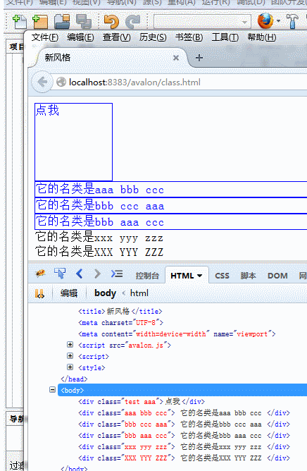
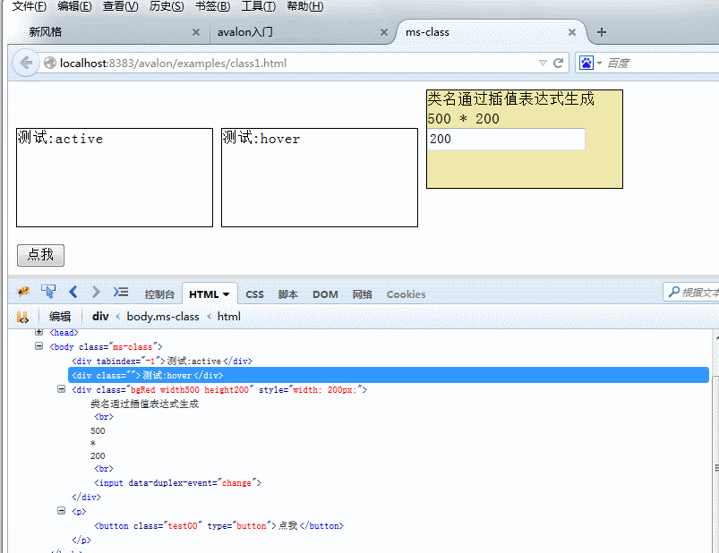
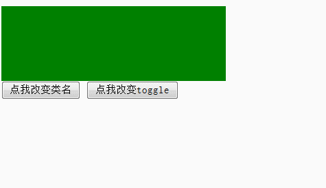
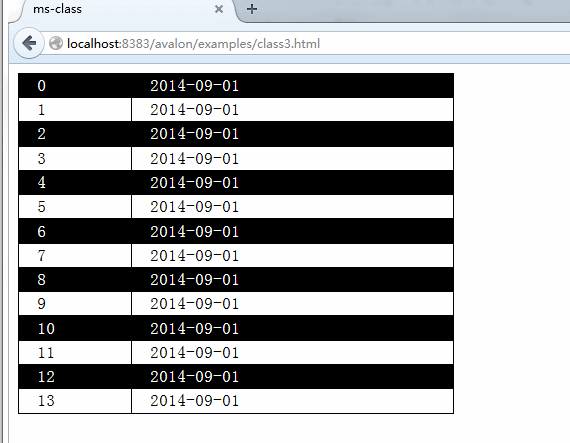

类名操作(ms-class)
ms-class是avalon用得最多的几个绑定之一， 也正因为如此其功能一直在扩充中。根据时期的不同，分为旧风格与新风格两种。
旧风格是指ms-class-xxx=”expr”，ms-class-aaa-bbb=”expr”。
正如这里
所讲，一个绑定属性大体分成三部分，第一部分是ms，第二部分是class，第三部分是第二个-之后的所有字符串，
它们被称之为param。上面的xxx与aaa-bbb都是我们要处理里的类名。等号后面的expr是一个表达式，
根据它们的真假值决定是添加或移除。
因此有了新风格一说。现在不推荐使用旧风格了，不过avalon还是非常有节操地继续支持它。
<!DOCTYPE html>
<html>
<head>
<meta charset="UTF-8">
<title>旧风格</title>
<meta name="viewport" content="width=device-width">
<link href="//cdn.bootcss.com/bootstrap/3.3.5/css/bootstrap.min.css" rel="stylesheet">
<script src="avalon.js"></script>
<script>
var vm = avalon.define({
$id: "ms-class",
toggle: true,
click: function(e) {
vm.toggle = !vm.toggle
}
})
</script>
</head>
<body>
<div class="well" ms-controller="ms-class">
<!--新风格只需要 ms-class="{{toggle? 'btn-success':'btn-danger'}}" -->
<button type="button" class="btn" ms-click="click" ms-class-btn-success="toggle" ms-class-btn-danger="!toggle">点我</button>
</div>
</body>
</html>新风格的格式为ms-class=”class:expr”。其中ms-class也可以带第三个参数
（因为属性名不能重要，因此需要加一点“杂质”骗过浏览器），但它只能是数值，根据它们的大小决定执行顺序
（也见第三节的扫描机制部分），如ms-class-1=”aaa”,ms-class-2=”bbb”。
新风格的属性值由冒号拆分两部分，第一部分是类名，类名中可以使用插值表达式（如ms-class=”width{{w}}: isOk”），
第二部分是可选，不写（不写时冒号也不用写了）就默认是添加操作，
写时就根据其计算结果决定是添加还是移除（如 者ms-class=”red:1+1”）。简言之，新风格的属性值
分为类名部分与表达式部分
<!DOCTYPE html>
<html>
<head>
<title>新风格</title>
<meta charset="UTF-8">
<meta name="viewport" content="width=device-width">
<script src="avalon.js"></script>
<script>
var model = avalon.define({
$id: "ms-class",
toggle: true,
click: function(e) {
model.toggle = !model.toggle
}
})
</script>
<style>
.test {
width: 100px;
height: 100px;
border: 1px solid red;
color: red;
-webkit-user-select: none;
/* Chrome all / Safari all */
-moz-user-select: none;
/* Firefox all */
-ms-user-select: none;
/* IE 10+ */
-o-user-select: none;
user-select: none;
}
.aaa {
color: blue;
border: 1px solid blue;
}
</style>
</head>
<body ms-controller="ms-class">
<div class="test" ms-class="aaa:toggle" ms-click="click">点我</div>
<div ms-class="aaa" ms-class-1="bbb" ms-class-2="ccc"> 它的名类是aaa bbb ccc </div>
<div ms-class-2="aaa" ms-class="bbb" ms-class-1="ccc"> 它的名类是bbb ccc aaa </div>
<div ms-class="bbb" ms-class-1="aaa" ms-class-2="ccc"> 它的名类是bbb aaa ccc </div>
<div ms-class="xxx yyy zzz"> 它的名类是xxx yyy zzz </div>
<div ms-class="XXX YYY ZZZ:true"> 它的名类是XXX YYY ZZZ </div>
</body>
</html>
此外还有两个绑定，ms-active、 ms-hover。它们分别是用来摸拟:active, :hover效果，用法与ms-class一样，都分新旧风格。ms-active只在点击的那一瞬间有效果，ms-hover只在掠过时有效果，失去焦点或离开目标元素就会移除刚才添加的类名。
<!DOCTYPE html>
<html>
<head>
<title>ms-class</title>
<meta http-equiv="Content-Type" content="text/html; charset=UTF-8">
<script src="avalon.js"></script>
<style>
.ms-class div {
display: inline-block;
width: 200px;
height: 100px;
border: 1px solid black;
}
.active {
background: black;
color: white;
}
.bgRed {
background: palegoldenrod;
}
.hover {
background: red;
color: white;
}
</style>
<script type="text/javascript">
var model = avalon.define({
$id: "test",
w: 500,
h: 200,
bottom: true,
num: "00",
className: "点我",
changeClassName: function() {
model.num = (100 * Math.random()).toFixed(0);
model.className = this.className
}
})
</script>
</head>
<body ms-controller="test" class="ms-class">
<div ms-active="active">测试:active</div>
<div ms-hover="hover">测试:hover</div>
<div ms-class="bgRed width{{w}} height{{h}}" ms-css-width="h">
类名通过插值表达式生成
<br/> {{w}} * {{h}}
<br/>
<input data-duplex-event="change" ms-duplex="h">
</div>
<p>
<button type="button" ms-class="test{{num}}" ms-click="changeClassName">click me </button>
</p>
</body>
</html>
<!DOCTYPE html>
<html>
<head>
<meta charset="UTF-8">
<meta name="viewport" content="width=device-width">
<script src="avalon.js"></script>
<script>
var model = avalon.define({
$id: "test",
color: "red",
toggle: true,
changeToggle: function() {
model.toggle = !model.toggle
},
switchColor: function() {
model.color = model.color === "red" ? "blue" : "red"
}
})
</script>
<style>
.ms-class-test {
background: green;
width: 300px;
height: 100px;
}
.c-red {
background: red;
}
.c-blue {
background: blue;
}
</style>
</head>
<body ms-controller="test">
<div class="ms-class-test" ms-hover="c-{{color}}:toggle"> </div>
<button ms-click="switchColor"> 点我改变类名</button>
<button ms-click="changeToggle"> 点我改变toggle</button>
</body>
</html>
ms-class、 ms-hover、 ms-active涵盖了所有与类名相应的需求，并且使用上比jQuery还简单。最后看一下用它实现斑马线的效果吧。
<!DOCTYPE html>
<html>
<head>
<title>ms-class</title>
<meta charset="UTF-8">
<meta name="viewport" content="width=device-width">
<script src="avalon.js"></script>
<script>
avalon.define({
$id: "test",
array: avalon.range(0, 14)
})
</script>
<style>
.zebra-table {
border-collapse: collapse;
width: 400px;
border: 1px solid black;
}
.zebra-table td {
border: 1px solid black;
text-indent: 1em;
}
.zebra-table .even td {
background: black;
color: white;
}
.zebra-table .hover td {
color: red;
font-weight: bolder;
}
</style>
</head>
<body ms-controller="test">
<table class="zebra-table">
<tr ms-repeat="array" ms-hover="hover" ms-class="even: $index % 2 == 0">
<td>{{$index}}</td>
<td>2015-11-28</td>
</tr>
</table>
</body>
</html>
我们再比较一下ms-class新风格与ms-attr-class的区别吧。ms-class新风格不会试图将类名部分转换为变量， 只有当出现{{}}才只会将里面的东西作为表达式求值。而ms-attr-class总是会尝试将整个属性值变成一个变量， 如ms-attr-class="aaa"相当于ms-attr-class="{{aaa}}"，ms-attr-class="{{aaa}}222"相当于ms-attr-class="aaa+'222'"。
<!DOCTYPE html>
<html>
<head lang="en">
<meta charset="UTF-8">
<title>ms-class与ms-attr-class</title>
<link href="//cdn.bootcss.com/bootstrap/3.3.5/css/bootstrap.min.css" rel="stylesheet">
<script src="avalon.js"></script>
<script>
avalon.define({
$id: "list",
aaa: "list-group-item-info"
})
</script>
</head>
<body ms-controller="test">
<ul class="list-group" ms-controller="list">
<li class="list-group-item" ms-class="list-group-item-success">ms-class不带表达式</li>
<li class="list-group-item" ms-class="{{aaa}}">ms-class带表达式</li>
<li class="list-group-item" ms-attr-class="list-group-item-success">ms-attr-class不带表达式</li>
<li class="list-group-item" ms-attr-class="{{aaa}}">ms-attr-class带表达式</li>
</ul>
</body>
</html>- ms-class不带表达式
- ms-class带表达式
- ms-attr-class不带表达式
- ms-attr-class带表达式